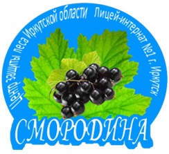

Лесники открывают двери 24 сентября - День посадки леса
 В Иркутском районе на территории Гороховского лесничества в минувшие выходные прошла акция «День посадки леса». в рамках данного мероприятия волонтеры высадили 40 тысяч саженцев сосны обыкновенной. По информации пресс-службы регионального правительства, участок в 10 га был сильно поврежден огнем в результате лесных пожаров в 2003 году.
Иркутские школьники и студенты, а также представители областного министерства лесного комплекса и просто неравнодушные граждане приняли участие в акции.
В ведомстве отмечают, что спустя 20 лет на данном участке снова появятся величественные сибирские сосны, благодаря тому, что ребята сегодня решили потратить свой выходной на благо природы.По информации пресс-службы, в акции приняли участие более 300 волонтеров.
Ее инициатором выступило общественное учреждение «Добровольная пожарная охрана Иркутской области» при поддержке министерства лесного комплекса Приангарья, Иркутского лесничества и Регионального лесопожарного центра Иркутской области.
В акции приняли участие 10 членов школьного лесничества «Смородина», 7-11 класс, МБОУ г. Иркутска лицея - интерната №1. Высадили около 600 саженцев сосны.
В экскурсии на пришкольный участок для 5 классов: «Осенние явления в жизни растений» приняли участие 75 человек, познакомились с растениями, растущими на пришкольном участке и школьном мини-питомнике хвойных растений( в него перекочевали наши саженцы , выращенные на подоконнике в кабинете биологии), их приспособлениями к среде обитания. Ребята составили хорошие отчеты по экскурсии.
Викторину для 5 классов: «Знатоки леса», презентацию лесничества «Смородина» >провели члены школьного лесничества: Перевалов Матвей и Ланцева Александра, Бажин Иван, Павлюк Арина, Вехов Вадим, с целью привлечения новых участников нашего сообщества. О работе ЦЗЛ Иркутской области рассказал Борис Александрович.
Ребята получили дипломы и грамоты и сладкие призы.